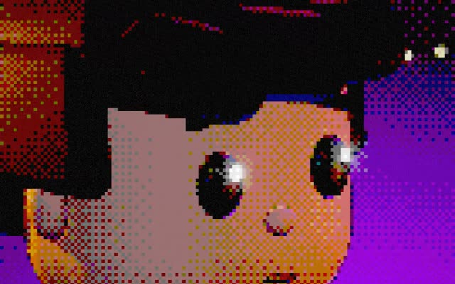

1. Pixel Art
in the reelMake a 9:16 (1080×1920) 3D animated scene in Three.js, as one HTML file I can open in Chrome: [describe your scene, e.g. a boy on a sofa talking to a small robot, cosy room at night]. Style: Pixel Art. Render the 3D scene, then pixelate it in a post-processing shader: snap UVs to a 135×240 grid, cut colours to 6 levels with 4×4 Bayer dithering, and darken outlines from a depth/normal edge pass. Add an 8-bit HUD: a health bar over the character, SCORE and LIVES in a chunky pixel font. Keep the characters recognisable (same face, hair and clothes) and add small acting: blinks, head turns and mouth moving while talking. Then give me a Playwright script that renders every frame at 30 fps and the ffmpeg command to turn the frames into an MP4.